News & Events
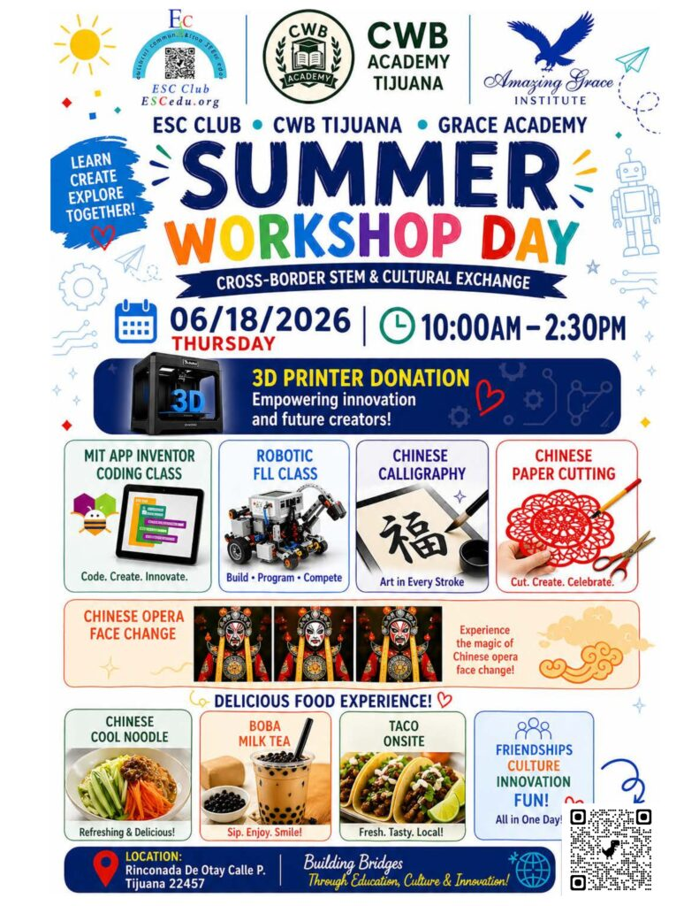
ESC Club Brings STEM, Culture, and Cross-Border Friendship to CWB Tijuana Summer Camp Day
ESC Club proudly returned to CWB School in Tijuana on June 18, 2026, for its second annual Cross-Border STEM & Culture Camp Day, continuing its mission of promoting equal access to STEM education and cultural exchange for youth along the U.S.-Mexico border.
Read more →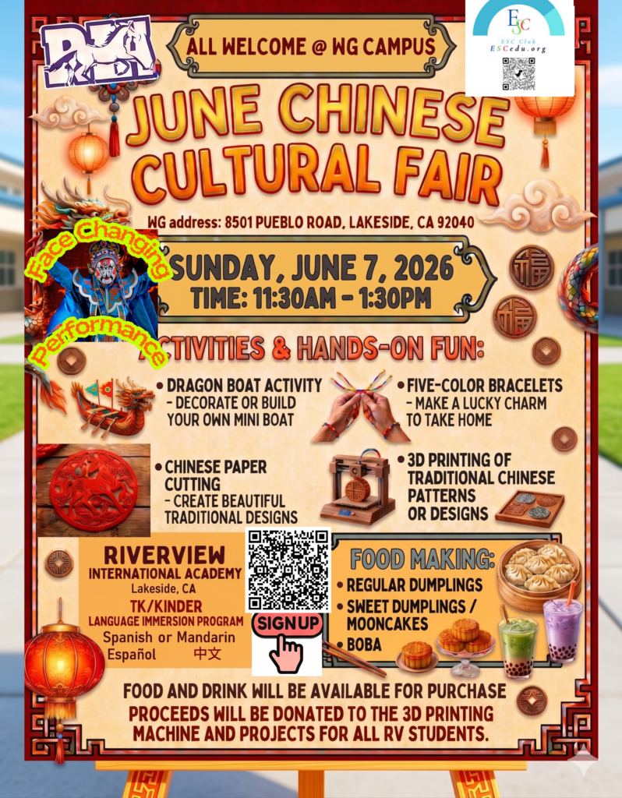
ESC Club and Riverview International Academy Celebrate Culture, Community, and Learning at the 2026 Summer Culture Day
ESC Club proudly partnered with Riverview International Academy (RIA) to host the 2026 Summer Culture Day on the RIA campus, bringing together students, families, educators, and community leaders for a vibrant celebration of multicultural learning and Chinese cultural heritage.
Read more →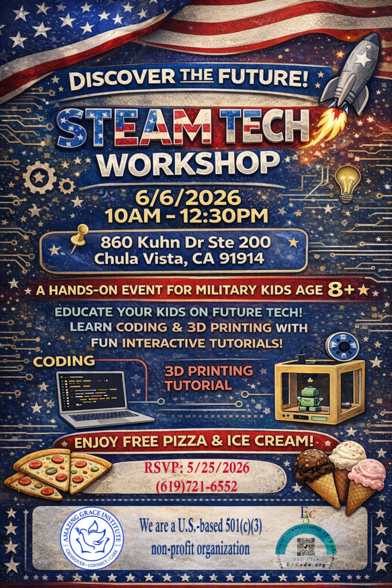
ESC Club Hosts STEM Learning Day for San Diego Navy Families
ESC Club proudly hosted a STEM Learning Day for San Diego Navy Families on June 6, 2026, welcoming approximately 20 Navy families and their children to the ESC Club Chula Vista office for an engaging and educational STEM experience.
Read more →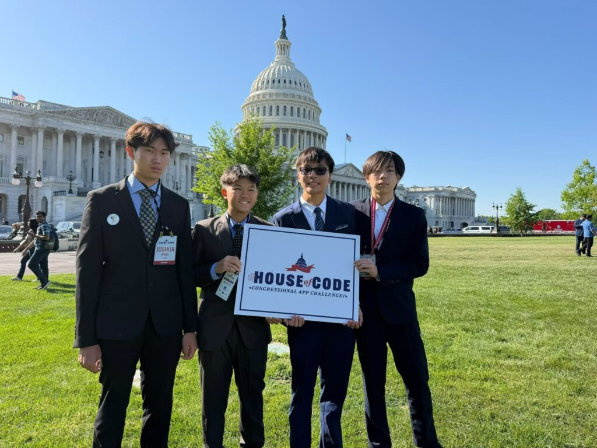
ESC Club CAC Winners Represent CA-52 district at the U.S. Capitol for House of Code 2026
The ESC Club proudly celebrates its Congressional App Challenge (CAC) student winners who traveled to Washington, D.C. to participate in the prestigious House of Code 2026, held at the United States Capitol.
Read more →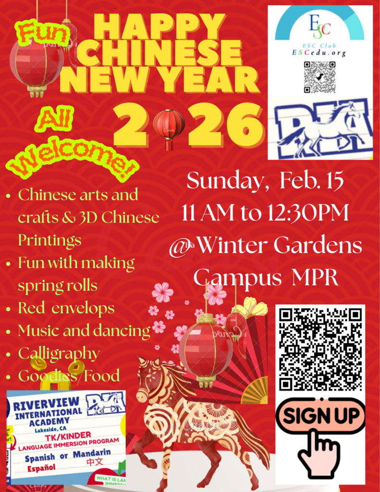
ESC Club & Riverview International Academy Host 2026 Lunar New Year Festival Celebrating Culture, STEM, and Community
On February 15, 2026, ESC Club partnered with Riverview International Academy — the only language-immersion school of choice in the Lakeside Union School District — to host a vibrant Lunar New Year…
Read more →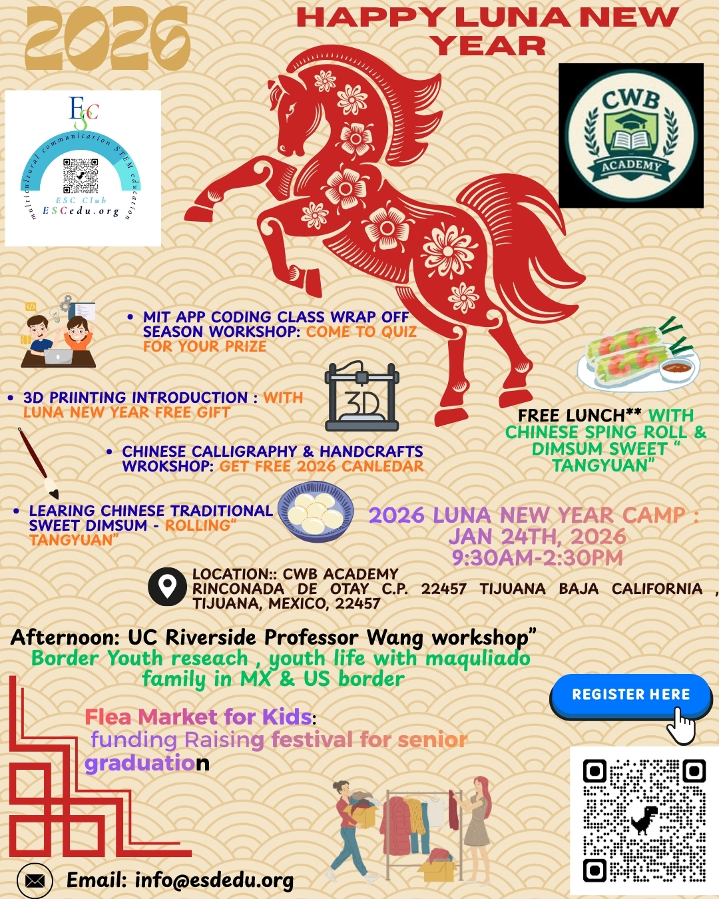
ESC Club Hosts Cross-Border STEM & Cultural Exchange Event at CWB Academy, Tijuana
On January 24, 2026, ESC Club successfully hosted a full-day Cross-Border STEM and Cultural Exchange Event at CWB Academy in Tijuana, Mexico, bringing together students and families from diverse backgrounds for a day of learning, creativity, and cultural connection.
Read more →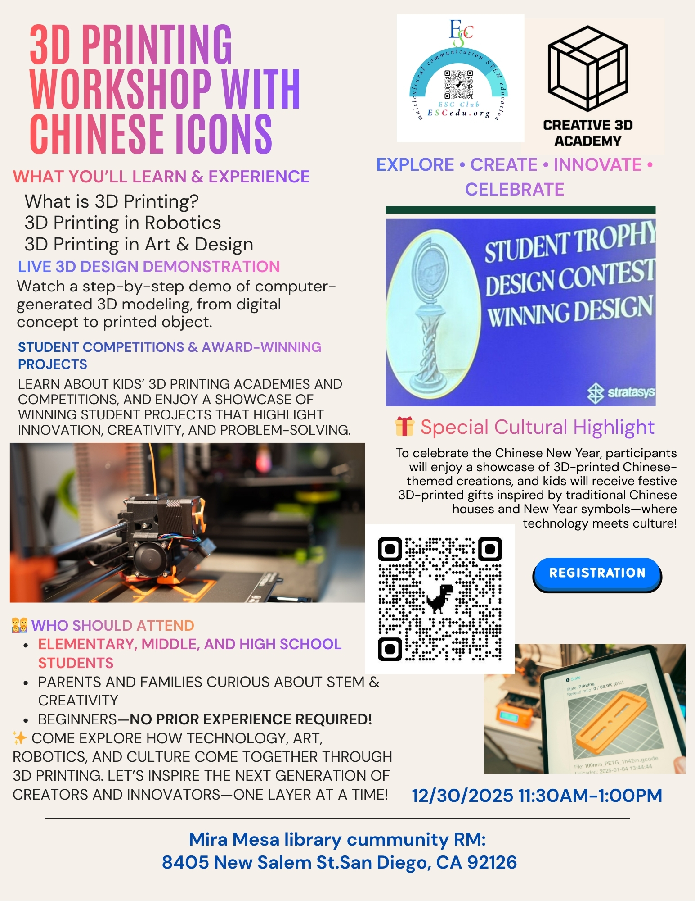
ESC Club Launches 2026 New Year STEM Program with 3D Printing Workshop at Mira Mesa Library
To welcome the 2026 New Year, ESC Club proudly launched its new 3D Printing STEM Program, expanding beyond its established MIT App Inventor coding classes to introduce students and families to cutting-edge 3D technology that bridges STEM education and creative art design.
Read more →
ESC Club Launches Cross-Border MIT App Inventor Coding Program in Tijuana-Fall 2025
The ESC Club successfully expanded its Fall 2025 MIT App Inventor Coding Program to Tijuana, Mexico, partnering with CWB Academy, a local private school, to deliver a 10-session online coding course for middle and high school students.
Read more →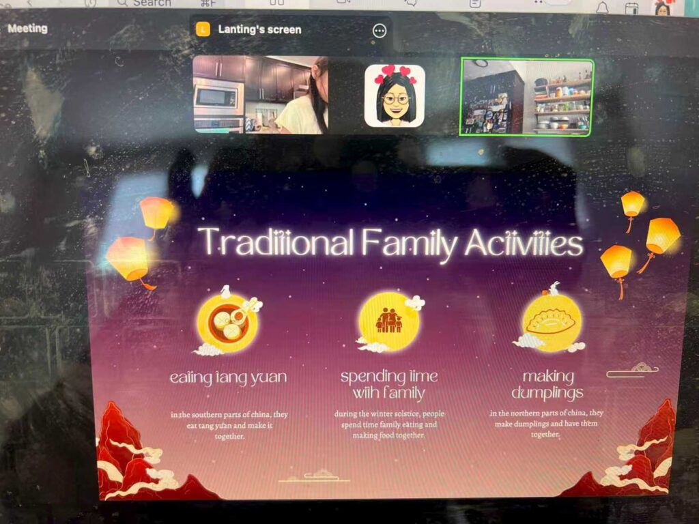
Luna Culture Webinar for Mexico and Latina Communities-Rolling Tangyuan with Lola
On December 13, 2025, as part of ESC Club’s ongoing Luna Culture Promotion Series for Mexico and Latina communities, ESC Club proudly hosted a special online cultural webinar titled “Rolling Tangyuan with Lola.”
Read more →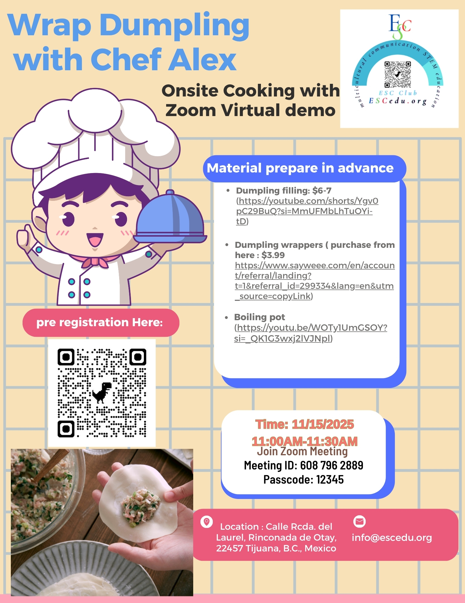
Lunar Culture Webinar for Latino Families-“Wrapping Dumplings with Chef Alex”
On November 15, 2025, as part of ESC Club’s ongoing Lunar Culture Promotion and multicultural outreach to the Latino community, ESC Club student leader Alex Tang hosted an interactive online webinar titled “Wrapping Dumplings with Chef Alex.”
Read more →
ESC Club Brings Chinese Cultural Experiences to Riverview International Academy’s Cultural Festival
On Oct 18th,2025. The ESC Club was honored to join Riverview International Academy’s Cultural Festival, celebrating global heritage and cultural diversity!
Read more →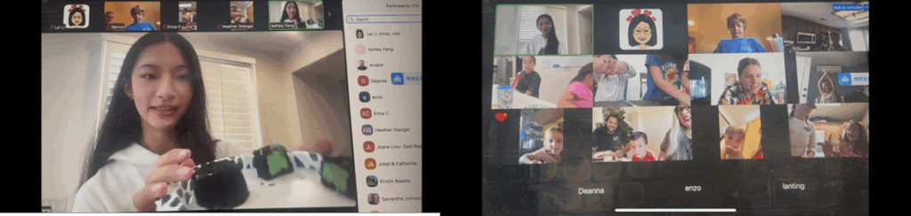
Luna Culture Webinar For Mexico and Latina Communities- Ashley & Mooncake
Lakeside, CA – October 5, 2025 — On Sunday morning, Ashley Fang, a 10th grader and the Chinese Cultural Ambassador and Director at the ESC Club, led a special online cultural workshop for the…
Read more →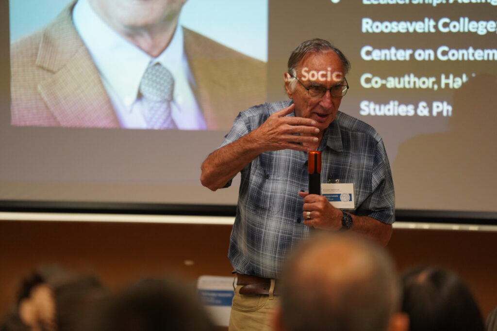
AGI International AI/APP Innovation Challenge 2025 Award Ceremony
San Diego, CA — September 27, 2025 — The AGI International AI/APP Innovation Challenge proudly celebrated its 2025 Awards Ceremony on the beautiful campus of the University of California, San Diego (UCSD).
Read more →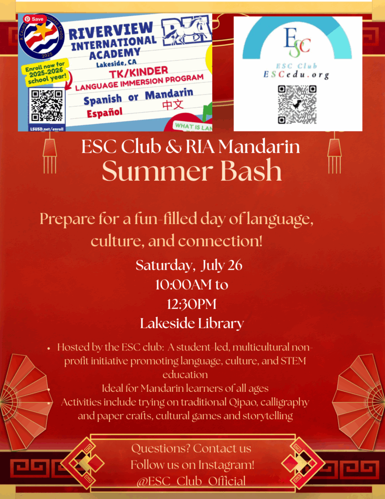
ESC Club Hosts Summer Cultural Bash at Lakeside Public Library
On July 26, 2025, ESC Club partnered with Riverview International Academy PTSA to host a vibrant Summer Cultural Bash at the Lakeside Public Library.
Read more →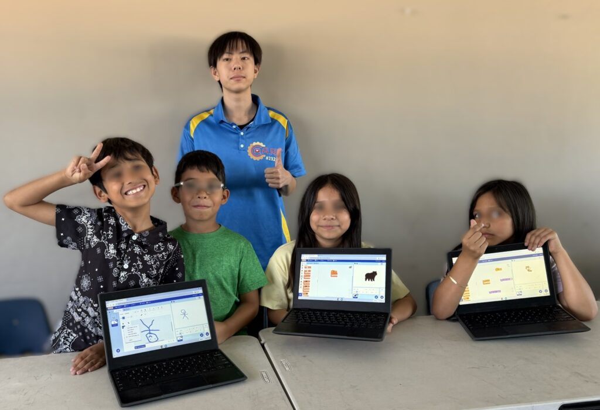
July Summer day trip -Alex Tang Brings Coding Education to Tijuana with CWB Summer Camp
On 07/25/2025 a special day trip this summer, ESC Club proudly joined hands with three other student organizations to deliver a high-impact, hands-on coding class at the Children Without Borders (CWB) Academy in Tijuana, Mexico.
Read more →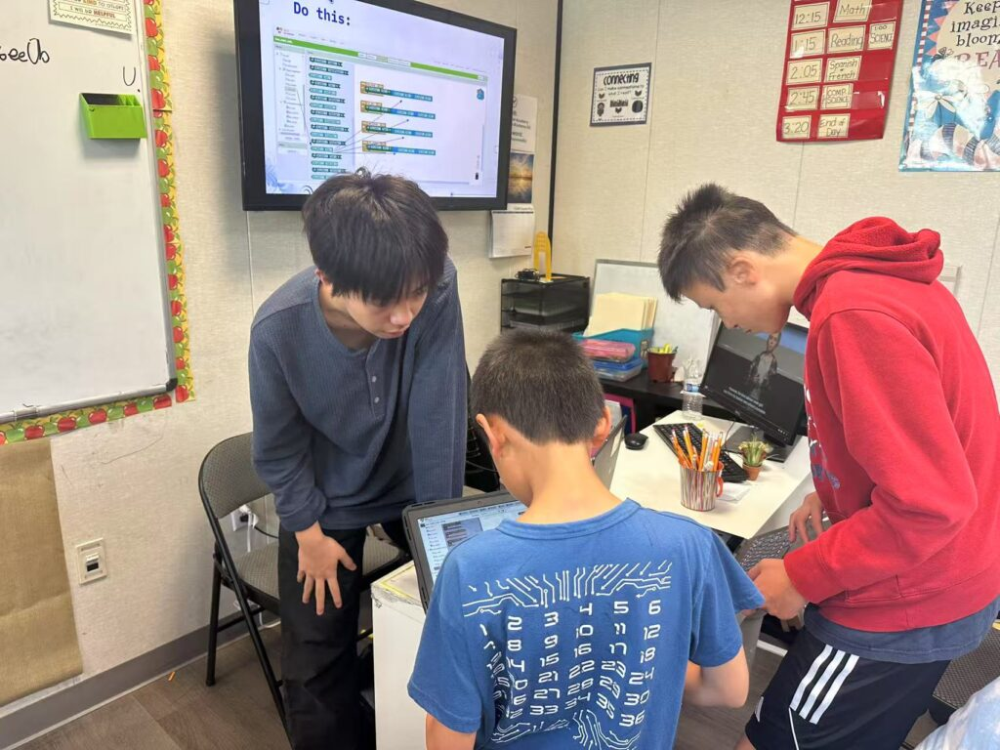
ESC Club Hosts 2025 Summer In-Person Coding Week at Grace Academy in San Diego
San Diego, CA – July 2025 – ESC Club proudly wrapped up its 2025 Summer In-Person Coding Week, held at Amazing Grace Christian School in San Diego.
Read more →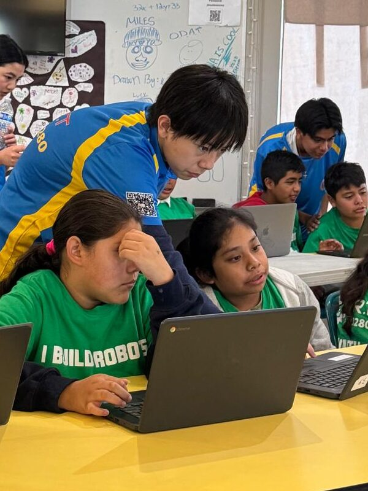
Bridging Cultures and Inspiring Futures – Alex Tang’s Coding Outreach at Casa de Amistad
In a world where technology continues to shape our future, equitable access to STEM education remains a pressing challenge.
Read more →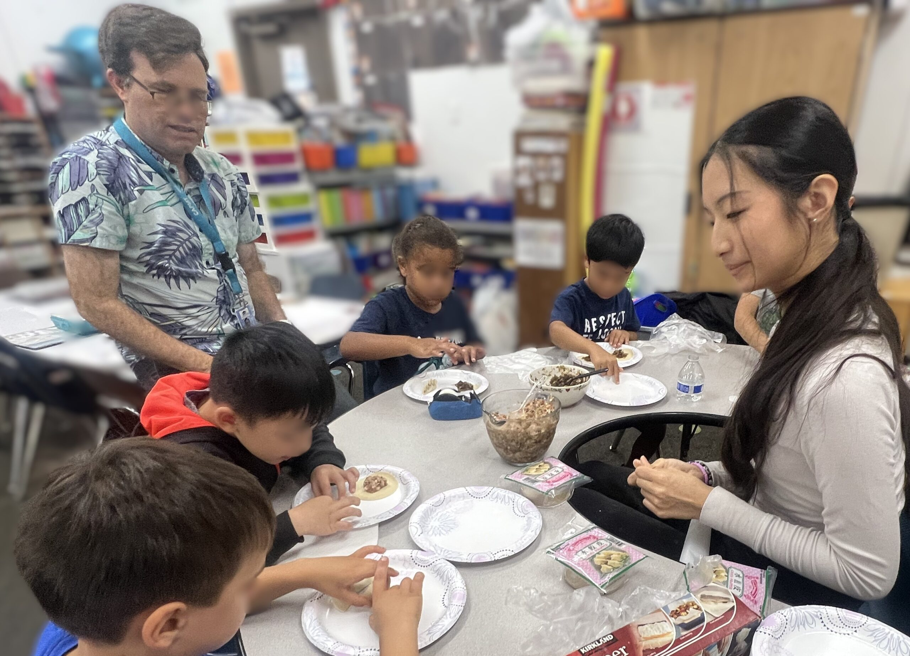
Ashley Fang Represents ESC Club at Riverview Mandarin Immersion
Lakeside, CA – June 12, 2025 — On the final day of school, Ashley Fang, a passionate member of the ESC (East Side Community) Club, visited Riverview International Academy’s Mandarin Immersion Program…
Read more →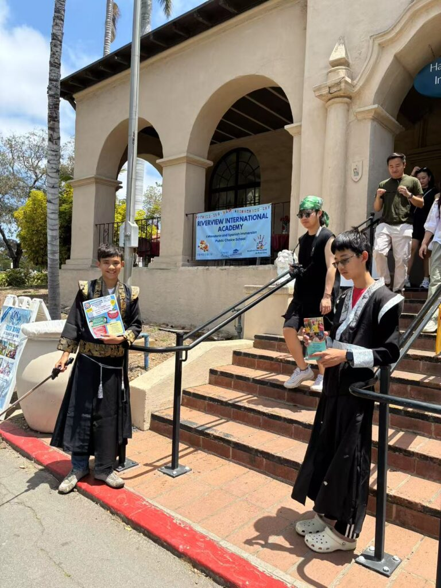
Volunteering in Asian Pacific heritage festival day
San Diego, CA – May 24, 2025 — Members of the ESC Club proudly volunteered at the 12th Annual Asian Pacific Cultural Festival of San Diego, held at Balboa Park’s International Cottages on May 24, 2025.
Read more →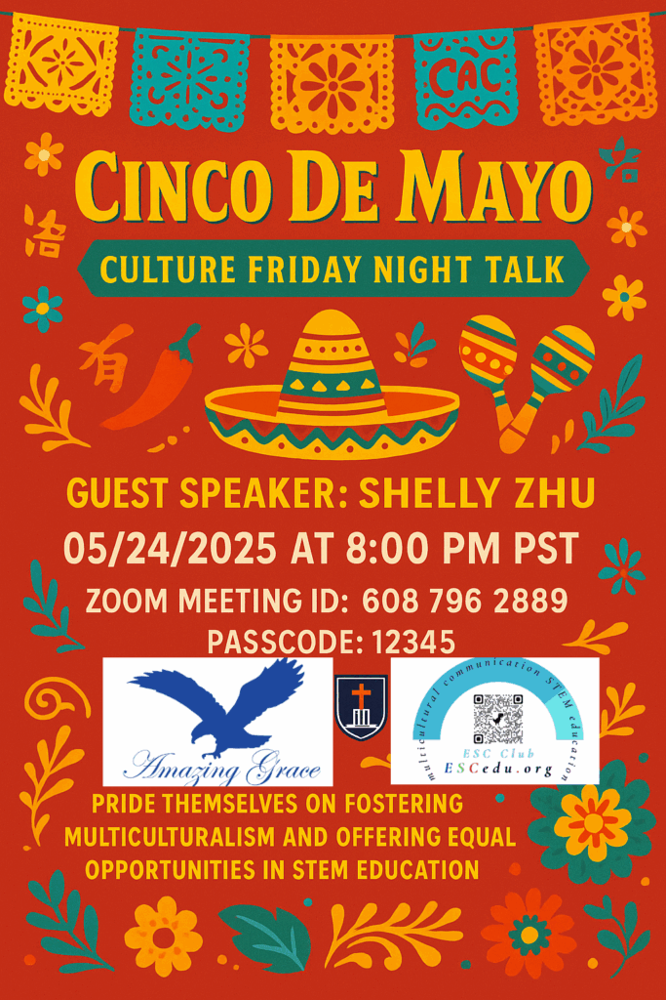
ESC Club Celebrates Cinco De Mayo with Trilingual Online Culture Webinar
San Diego, CA – May 24, 2025 – The ESC Club proudly hosted a vibrant online Friday Night Culture Webinar to celebrate Cinco De Mayo, bringing together students from both the United States and Mexico for an engaging cross-cultural event.
Read more →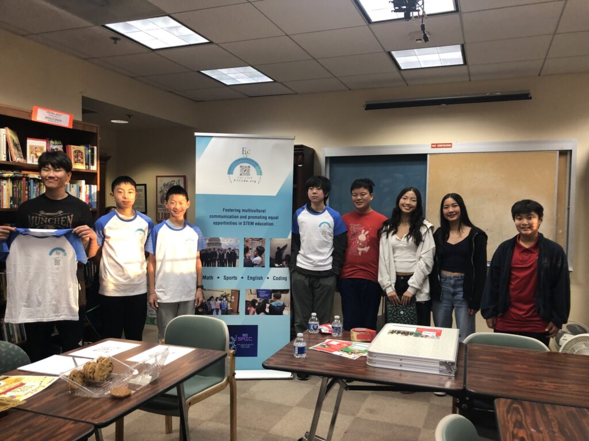
ESC Club Kicks Off 2025 Recruiting & Demo in library
ESC Club Kicks Off 2025 with Exciting Recruitment Event and App Demos at Scripps Miramar Ranch Library
Read more →2025 April San Diego AI @ASU GSV Show
San Diego, CA – April 6, 2025 – On April 6th, members of the ESC Club attended one of the most exciting AI-focused events of the year in San Diego.
Read more →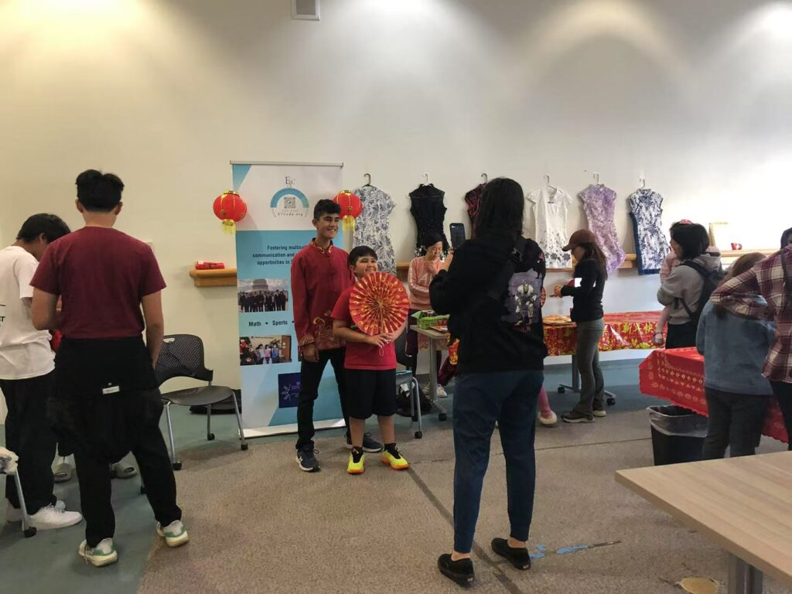
Chinese New Year Culture Promotion
In celebration of Lunar New Year, the ESC Club organized an engaging Diversity Culture Promotion event at one of San Diego’s public libraries.
Read more →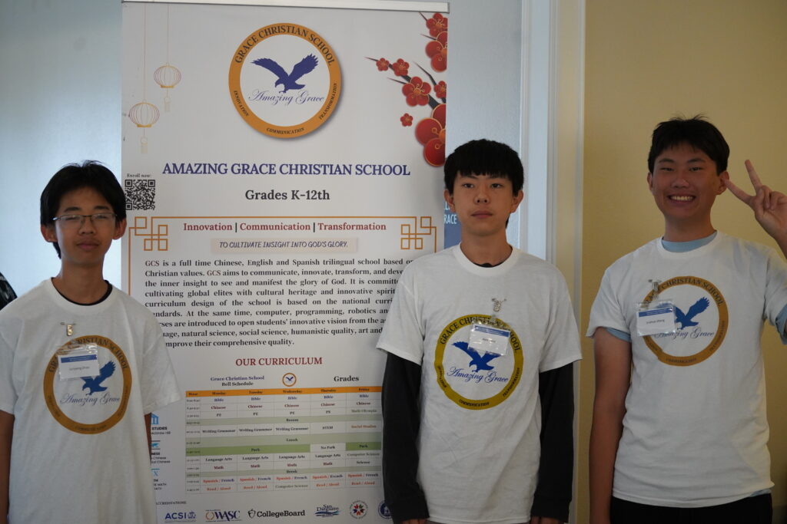
SAIC Celebrates Young Innovators at the SD STEAM App Innovators Challenge Award Ceremony
The San Diego STEAM App Innovators Challenge (SAIC) is thrilled to invite everyone to either show in person or virtually attend the SD STEAM App Innovators Challenge Award Ceremony!
Read more →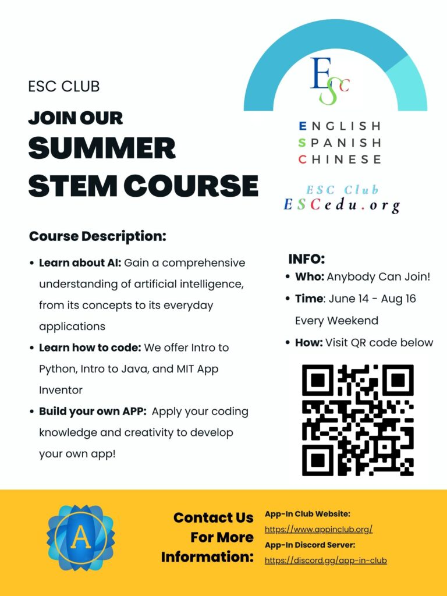
ESC Club Launches Global Virtual Coding Classes for Students Aged 9 and Above
ESC Club is excited to announce a series of virtual online coding classes for students aged 9 and above, available worldwide during the summer break of 2024.
Read more →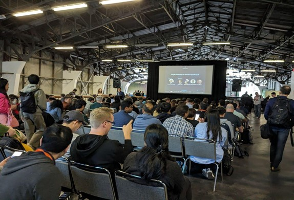
ESC Club Members Attend GEN AI Summit K12 Panel
San Francisco, CA – May 29-31, 2024 – The members of the ESC Club proudly attended the GEN AI Summit K12 Panel, bringing with them their innovative robotics project and the award-winning app “Feed Me Smart.”
Read more →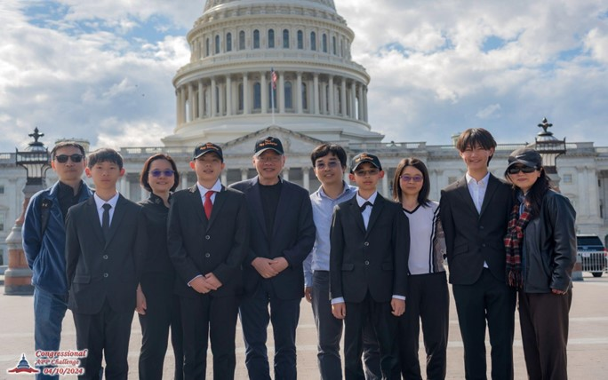
The Congressional App Challenge: House of Code
Our journey began with the creation of Feed Me Smart, an innovative app designed to help users find affordable, accessible, and healthy food options.
Read more →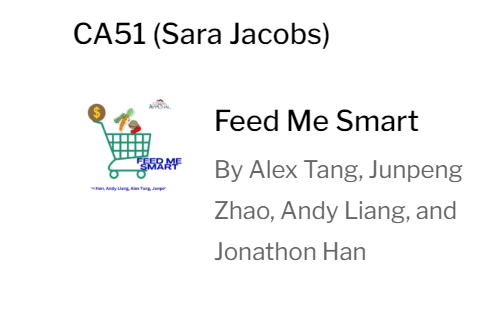
Congress app challenge 2023 winner CA 51
Rep. Jacobs has named Alex Tang of Mesa Verde Middle school, Junpeng Zhao of Pacific Trails Middle School, Andy Liang of Stratford Middle School San Jose, and Jonathon Han of Washington High School…
Read more →